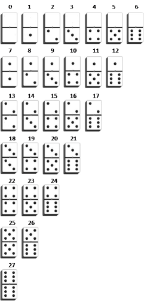

Actividad: Desarrollando algoritmos.
info_outline Actividad: Desarrollando algoritmos.
Deberás desarrollar los algoritmos que solucionen los problemas que se presentan en la actividad.
group Modalidad
Individual, cada estudiante debe de hacer su propio archivo y entregarlo de forma individual en la plataforma
check Objetivos de aprendizaje
- Desarrollar algoritmos.
list Instrucciones
-
Analiza cada uno de los ejercicios que se presentación a continuación. Identifica cual sería el algoritmo para la solución de los ejercicios.
Redacta el algoritmo en pseudocódigo, cumpliendo con todas las características que hemos visto que un algoritmo debe tener. Puedes hacerlo en un archito .txt o tomar fotos de tus apuntes siempre y cuando la imagen sea legible.
Has pruebas manualmente siguiendo los pasos para ver en que casos sirve y en que casos no.
-
Problemas:
1. Calcular la suma de los números pares menores o iguales a N, donde N es pedido al usuario. -
2. Dadas tres cantidades enteras positivas que representan la longitud de tres segmentos de línea, se quiere determinar las siguientes situaciones:
- ¿Es un triángulo? Si los valores de dichas cantidades pueden corresponder a las longitudes de los lados de un triángulo.
- ¿Es escaleno? En el caso de que las medidas puedan corresponder a las longitudes de los lados de un triángulo, si dicho triángulo es escaleno.
- ¿Es equilátero? En el caso de que las medidas puedan corresponder a las longitudes de los lados de un triángulo, si dicho triángulo es equilátero.
- ¿Es isósceles? En el caso de que las medidas puedan corresponder a las longitudes de los lados de un triángulo, si dicho triángulo es isósceles.
-
3. Las fichas del dominó se pueden enumerar de forma ordenada como se muestra en la siguiente figura:

Dado los dos números de la fichas, superior e inferior, determinar el número asociado según la figura anterior.
- 4. Dado un número, obtener su inverso numérico. Por ejemplo, si el número es 1234, el resultado debe ser 4321.
- 5. Convertir un número de decimal a binario.
- 6. Determinar si un número es primo o no. Un número primo es aquel que sólo puede ser divido entre la unidad y el mismo.